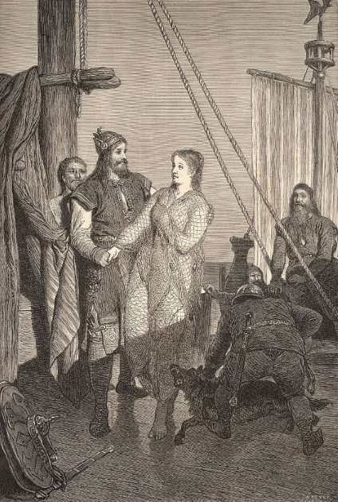

RAGNAR LODBROK
Ragnar Lodbrok: Entre la Historia y la Leyenda
Ragnar Lodbrok, también escrito como Ragnar Lothbrok, es una de las figuras más icónicas de la era vikinga. Su nombre ha llegado hasta nuestros días envuelto en una mezcla de hechos históricos, mitos heroicos y leyendas nórdicas. Aunque los historiadores aún debaten si fue una persona real, una figura legendaria o una fusión de varios jefes vikingos, su impacto en la cultura escandinava y en la expansión vikinga es innegable.
Según las sagas islandesas y los poemas escáldicos, Ragnar fue un guerrero, explorador y rey vikingo que vivió entre los siglos VIII y IX. Se le describe como un líder valiente, temido por sus enemigos y admirado por su pueblo. Se dice que fue hijo de un rey sueco o danés llamado Sigurd Ring, aunque este linaje varía según la fuente.
Uno de los aspectos más reconocibles de su leyenda es su vestimenta: Ragnar llevaba pantalones hechos con piel de animal tratados con brea o alquitrán, lo que le valió el apodo “Lodbrok”, que en nórdico antiguo significa “pantalones peludos” o “pantalones deshilachados”.
Las crónicas lo relacionan con numerosas campañas de saqueo por las Islas Británicas y el continente europeo. Supuestamente lideró ataques contra Francia, Inglaterra, Escocia e incluso Irlanda. Se dice que saqueó París en el año 845, cuando el rey Carlos el Calvo le pagó una gran suma de dinero para que abandonara la ciudad. Esta incursión está documentada en fuentes francas y se asocia con un jefe vikingo llamado Reginherus, que muchos creen que podría ser Ragnar.
Además de sus hazañas militares, Ragnar es famoso por sus numerosos hijos, quienes también se convirtieron en importantes figuras vikingas. Las sagas mencionan a Bjorn Ironside, Ivar el Deshuesado, Sigurd Serpiente en el Ojo, Ubbe y Hvitserk, todos ellos guerreros reconocidos que protagonizaron incursiones masivas y fundaron reinos fuera de Escandinavia.
El relato más famoso sobre su muerte es una mezcla de historia y mito. Según la leyenda, Ragnar intentó invadir Northumbria, un reino en el norte de Inglaterra, pero fue capturado por el rey Ella (Ælla). Este ordenó que lo ejecutaran arrojándolo a un pozo lleno de serpientes venenosas. Mientras moría, Ragnar recitó un poema heroico y profetizó que sus hijos vengarían su muerte. Esta venganza se concretaría con la llegada del Gran Ejército Pagano a Inglaterra en 865, liderado por sus hijos.
En la tradición vikinga, los héroes eran recordados por su valentía, su ingenio y su capacidad para burlar el destino. Ragnar encarna todos estos ideales. En los relatos poéticos, se le presenta no solo como un guerrero temido, sino como un hombre astuto, capaz de conquistar ciudades, escapar de trampas y liderar a su pueblo con carisma.
Uno de los episodios más memorables de su leyenda es el saqueo de París. Según las crónicas francas, en el año 845, una flota vikinga navegó por el río Sena y llegó a las puertas de la ciudad. El rey Carlos el Calvo, incapaz de detener a los invasores, les pagó 7.000 libras de plata para evitar la destrucción. Este evento es uno de los primeros casos documentados de danegeld, un tributo pagado a los vikingos para comprar la paz.
Otra parte importante de su historia es la influencia de sus hijos. Ivar el Deshuesado, por ejemplo, fue uno de los líderes del Gran Ejército Pagano, una fuerza vikinga que arrasó los reinos anglosajones durante décadas. Bjorn Ironside habría navegado hasta el Mediterráneo, saqueando ciudades en la actual Italia y el norte de África. Estas acciones contribuyeron a la expansión del mundo vikingo mucho más allá de Escandinavia.Culturalmente, Ragnar Lodbrok representa el espíritu indomable del vikingo: ambicioso, guerrero, explorador, y dispuesto a enfrentarse a reinos poderosos sin temor. Su historia refleja la transformación del mundo nórdico, desde sociedades tribales a potencias marítimas que cambiaron la historia de Europa.
En tiempos modernos, su figura ha ganado renovada popularidad gracias a la televisión. La serie "Vikings", producida por History Channel, presenta una versión dramática de su vida, combinando hechos históricos con elementos ficticios. Aunque no es completamente fiel a las fuentes, la serie ha ayudado a revitalizar el interés por la era vikinga y la figura de Ragnar.